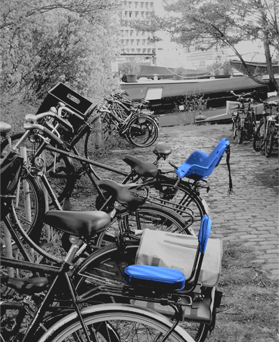

Inicio
Programas In Company
Consultoría de Autor
Píldoras de Conocimiento
Nosotros
Blog
Coaching
Presentaciones

"La vida es como una bicicleta de diez velocidades; hay algunas que la mayoría nunca usamos."
Charles M. Schulz